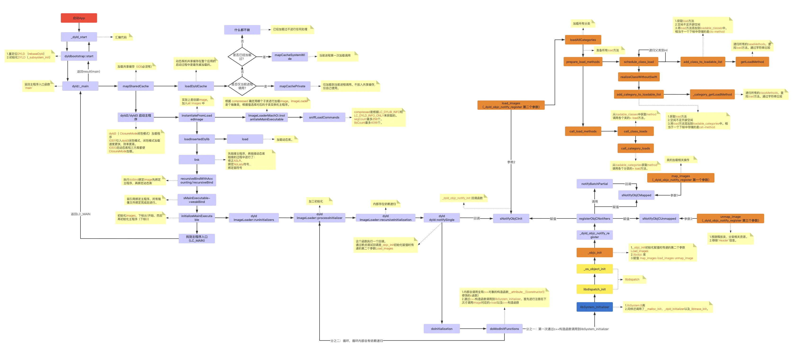

dyld加载过程
iOS的app启动过程
- iOS的app启动过程
- 概述
- 详细
- 
- 概述
- iOS的app启动的不同阶段
Pre-main阶段main阶段
- iOS的app启动调用函数


dyld加载过程
- dyld2 vs dyld3
- dyld加载过程
- 图
- 文字版
- 图
- 图
- 图


dyld加载过程1
(lldb) bt
* thread #1, queue = 'com.apple.main-thread', stop reason = breakpoint 23.2
* frame #0: 0x000000018d124174 libdyld.dylib`dladdr
frame #1: 0x000000010b0bfbac AwemeCore`___lldb_unnamed_symbol13025$$AwemeCore + 80
frame #2: 0x000000018d041c38 libobjc.A.dylib`CALLING_SOME_+initialize_METHOD + 20
frame #3: 0x000000018d04742c libobjc.A.dylib`initializeNonMetaClass + 644
frame #4: 0x000000018d0471f8 libobjc.A.dylib`initializeNonMetaClass + 80
frame #5: 0x000000018d047ba8 libobjc.A.dylib`initializeAndMaybeRelock(objc_class*, objc_object*, mutex_tt<false>&, bool) + 284
frame #6: 0x000000018d05450c libobjc.A.dylib`lookUpImpOrForward + 700
frame #7: 0x000000018d0448a8 libobjc.A.dylib`object_setClass + 104
frame #8: 0x000000018d29da70 CoreFoundation`_CFRuntimeCreateInstance + 580
frame #9: 0x000000018d2bcb74 CoreFoundation`__CFStringCreateImmutableFunnel3 + 1944
frame #10: 0x000000018d2bcef8 CoreFoundation`CFStringCreateWithCString + 92
frame #11: 0x000000018d29f610 CoreFoundation`__CFInitialize + 812
frame #12: 0x0000000104fddfac dyld`ImageLoaderMachO::doImageInit(ImageLoader::LinkContext const&) + 248
frame #13: 0x0000000104fde580 dyld`ImageLoaderMachO::doInitialization(ImageLoader::LinkContext const&) + 40
frame #14: 0x0000000104fd95d0 dyld`ImageLoader::recursiveInitialization(ImageLoader::LinkContext const&, unsigned int, char const*, ImageLoader::InitializerTimingList&, ImageLoader::UninitedUpwards&) + 548
frame #15: 0x0000000104fd953c dyld`ImageLoader::recursiveInitialization(ImageLoader::LinkContext const&, unsigned int, char const*, ImageLoader::InitializerTimingList&, ImageLoader::UninitedUpwards&) + 400
frame #16: 0x0000000104fd8334 dyld`ImageLoader::processInitializers(ImageLoader::LinkContext const&, unsigned int, ImageLoader::InitializerTimingList&, ImageLoader::UninitedUpwards&) + 184
frame #17: 0x0000000104fd83fc dyld`ImageLoader::runInitializers(ImageLoader::LinkContext const&, ImageLoader::InitializerTimingList&) + 92
frame #18: 0x0000000104fca3d0 dyld`dyld::initializeMainExecutable() + 136
frame #19: 0x0000000104fcedb4 dyld`dyld::_main(macho_header const*, unsigned long, int, char const**, char const**, char const**, unsigned long*) + 4616
frame #20: 0x0000000104fc9208 dyld`dyldbootstrap::start(dyld3::MachOLoaded const*, int, char const**, dyld3::MachOLoaded const*, unsigned long*) + 396
frame #21: 0x0000000104fc9038 dyld`_dyld_start + 56
==
- dyld`_dyld_start
- dyld`dyldbootstrap::start
- dyld`dyld::_main
- dyld`dyld::initializeMainExecutable
- dyld`ImageLoader::runInitializers
- dyld`ImageLoader::processInitializers
- dyld`ImageLoader::recursiveInitialization
- dyld`ImageLoaderMachO::doInitialization
- dyld`ImageLoaderMachO::doImageInit
- ...
- libdyld.dylib`dladdr
- ...
- dyld`ImageLoaderMachO::doImageInit
- dyld`ImageLoaderMachO::doInitialization
- dyld`ImageLoader::recursiveInitialization
- dyld`ImageLoader::processInitializers
- dyld`ImageLoader::runInitializers
- dyld`dyld::initializeMainExecutable
- dyld`dyld::_main
- dyld`dyldbootstrap::start
dyld加载过程2
- _dyld_start
- dyldbootstrap: : start
- dyld: : _main
- dyld: : initializeMainExecutable
- ImageLoader::runInitializers
- ImageLoader::processInitializers
- ImageLoader::recursiveInitialization
- Dyld ::notifySingle
- libobjC.a. dylib load_images
- +[ViewController load]
- libobjC.a. dylib load_images
- Dyld ::notifySingle
- ImageLoader::recursiveInitialization
- ImageLoader::processInitializers
- ImageLoader::runInitializers
- dyld: : initializeMainExecutable
- dyld: : _main
- dyldbootstrap: : start
dyld加载过程3
(lldb) bt
* thread #1, queue = 'com.apple.main-thread', stop reason = breakpoint 6.1
* frame #0: 0x0000000102495310 libAwemeDylib.dylib`_logos_method$_ungrouped$NSString$stringByAppendingString$(self="https://", _cmd="stringByAppendingString:", aString=0x0000000000000000) at AwemeDylib.xm:175:29
frame #1: 0x0000000108532cf8 AwemeCore`___lldb_unnamed_symbol3548$$AwemeCore + 520
...
frame #38: 0x00000001c2ecf60c FrontBoardServices`-[FBSSerialQueue _performNextFromRunLoopSource] + 28
frame #39: 0x00000001bdcd0a00 CoreFoundation`__CFRUNLOOP_IS_CALLING_OUT_TO_A_SOURCE0_PERFORM_FUNCTION__ + 24
frame #40: 0x00000001bdcd0958 CoreFoundation`__CFRunLoopDoSource0 + 80
frame #41: 0x00000001bdcd00f0 CoreFoundation`__CFRunLoopDoSources0 + 180
frame #42: 0x00000001bdccb23c CoreFoundation`__CFRunLoopRun + 1080
frame #43: 0x00000001bdccaadc CoreFoundation`CFRunLoopRunSpecific + 464
frame #44: 0x00000001c7c6b328 GraphicsServices`GSEventRunModal + 104
frame #45: 0x00000001c1dd863c UIKitCore`UIApplicationMain + 1936
frame #46: 0x000000010efec094 AwemeCore`awemeMain + 200
frame #47: 0x0000000102267ca4 Aweme`___lldb_unnamed_symbol21$$Aweme + 12
frame #48: 0x00000001bdb54360 libdyld.dylib`start + 4
- libdyld.dylib`start 开始的调用顺序
- app相关逻辑：Aweme
___lldb_unnamed_symbol21$$Aweme、AwemeCoreawemeMain- 然后才是其他系统常见函数
- UIKitCore`UIApplicationMain
- ...
- UIKitCore`UIApplicationMain
- 然后才是其他系统常见函数
- app相关逻辑：Aweme